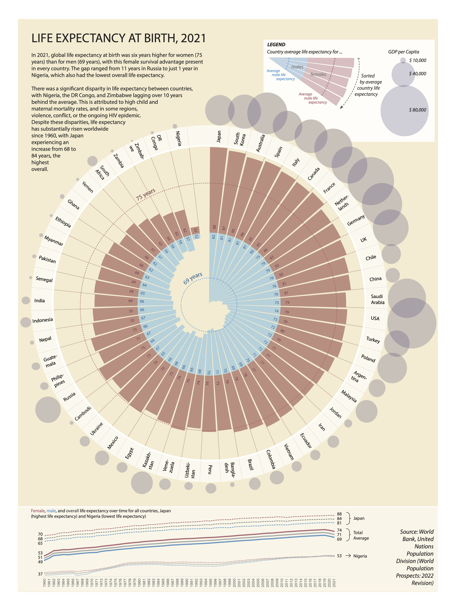
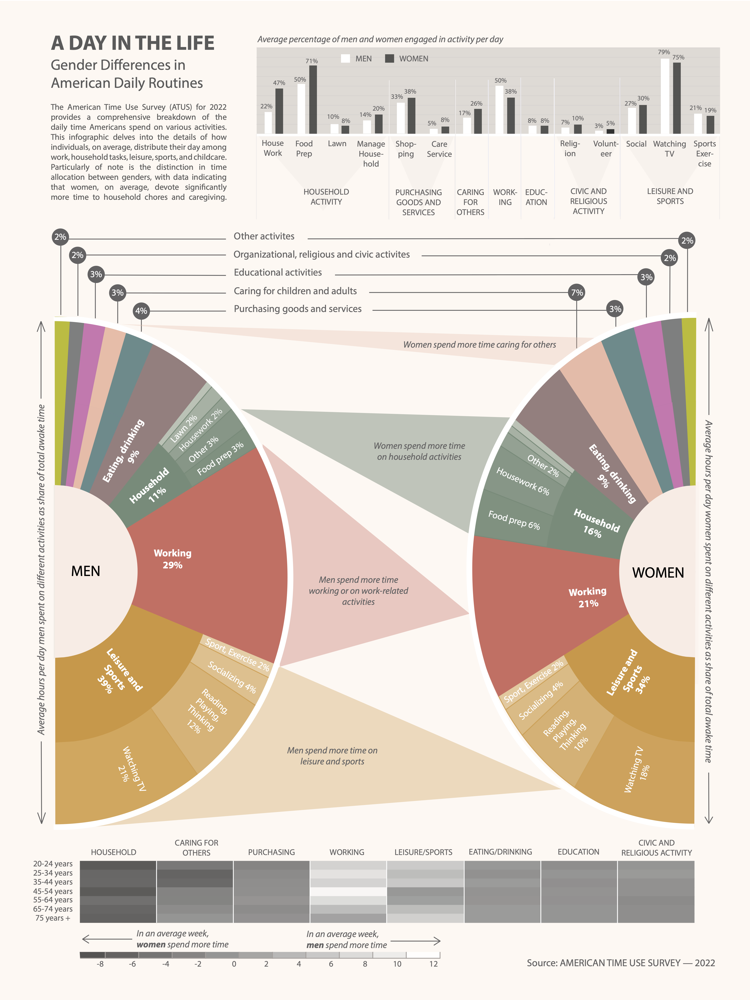

Data Visualization Portfolio

The NYC Tree Census
Mapping the tree-richest and tree-poorest neighborhoods in New York City.

Life Expectancy at Birth
Visualizing Life Expectancy by Country, GDP, and Gender.

Water Stress: Resource Availability vs. Consumption
Highlighting the balance between available freshwater resources, internal water reserves, and per capita water withdrawals.

A Day in the Life: Gender Differences in American Daily Routines
A comprehensive breakdown of the daily time Americans spend on various activities.

Undocumented Migration: Movement, Population Share, and Trends Over Time
Migration patterns, showing origins, destinations, trends over time, and population share across states.

Voter Rights, Then and Now
Visualizing the history of voter rights in the U.S., highlighting areas where voting is more accessible and where obstacles remain.